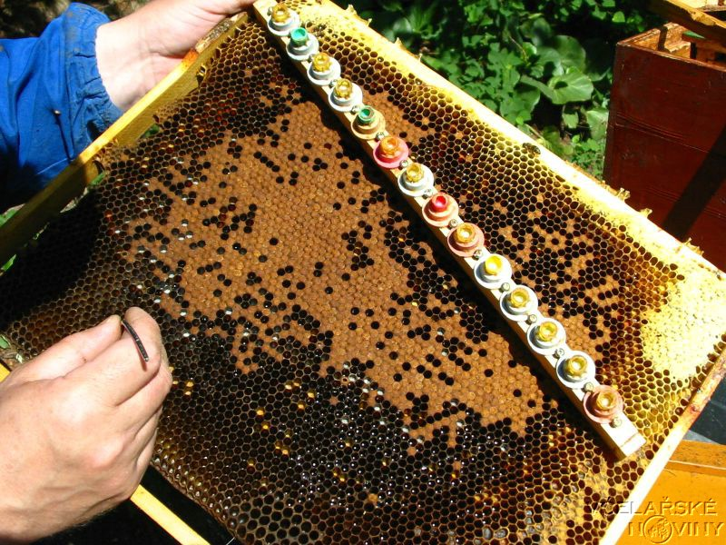

V období nedostateèné snùšky krmíme
vèelstvo ji� od zaèátku a� poloviny kvìtna medem. Nezbytnım
pøedpokladem je ale dostatek pylu, dostateèné mno�ství plodu a dobrá
péèe o plod.
Devìt a� deset dnù pøed zahájením
chovu zavøeme matku chovného vèelstva do nástavku. Vyhledáme ji a i s
plástem zavìsíme ho horního nástavku, kterı je od spodního oddìlen
mateøí møí�kou. Pokud matku nenajdeme, dáme møí�ku mezi všechny
nástavky Dosáhneme toho, �e probíhá normální vıvoj, a �e v obou
nástavcích, ve kterıch matka není, budou èasem jen zavíèkované plodové
plásty.
Asi
1 a� 2 hodiny pøed zavìšením chovného rámku pøipravíme vèelstvo na jeho
úlohu. Odebereme matku a veškeré plásty s otevøenım plodem, ale všechny
vèely ponecháme v úlu. Vzhledem k odejmutí jednoho nástavku jsou oba
zbıvající pøeplnìny vèelami. V nástavcích se tak zajistí dostateèné
mno�ství tepla, které je pøi péèi o rostoucí larvu v mateèníkové misce
bezpodmíneènì nutné. Pøi zú�ení vèelstva ve dvou nástavcích
necháme hned jednu ulièku volnou pro chovnı rámek. Proto�e vèelstvo
nemá matku, doporuèuje se zavìsit vedle mezery plást s otevøenım
plodem. Soudr�nost vèelstva se tak zachová. Tento plást mù�eme po
zavìšení chovného rámku opìt odstranit.
Tato metoda se
pou�ívá v plné sezónì, kdy není problém u vèelstev s chovnou náladou a
je ji mo�no vyu�ít k pøíle�itostnému chovu v normálních produkèních
vèelstvech. Dva dny pøed zamıšlenım pøelarvováním pøipravíme chovné
vèelstvo, vybíráme vèelstvo silné s dostatkem otevøeného plodu, je
vıhodné, pokud se projevuje chovná nálada. Do støedu medníku, t.j. nad møí�ku,
pøevìsíme dva a� tøi plásty s nejmladším plodem a vytvoøíme širší
meziplástovou mezeru pro vlo�ení chovného rámku, popøípadì i jednu a�
dvì pro vlo�ení jedné nebo dvou chovnıch lišt. Matka musí zùstat
pod møí�kou, v medníku se nesmí nacházet �ádnı mateèník. Do mezery
vlo�íme chovnı rámek nebo lišty s miskami a do 3 - 4 misek pøelarvujeme
dvoudenní, t.j. vìtší larvièky na 1- 3 miskách vèely narazí mateèníky a
ostatní misky se ve vèelstvu ovoní. V
den pøelarvování chovné lišty vyjmeme, z jednoho mateèníku vyjmeme
larvièku, pøidáme nìkolik kapek pitné vody a kašièku v mateèníku
rozmícháme-naøedíme, kašièka z jednoho mateèníku staèí na 15-25 misek,
zbylé mateèníky zu�itkujeme na kašièku apod. Pomocí sirky pøeneseme
v�dy kapièku naøedìné kašièky na dno misky, pozor, nesmí se potøísnit
stìny misek. Do misek pøeneseme jednodenní larvièky a chovné louèky
vlo�íme zpìt do vèelstev. V pøípadì bez snùšky vèelstvo podnìcujeme
alespoò 5 dní nebo nad chovné louèky na strùpek polo�íme malou placku medocukrového tìsta. Mateèníky se
zu�itkují dva dny pøed líhnutím. Chov
je mo�no v jednom vèelstvu opakovat 2-4 krát, optimální poèet
vkládanıch misek je 20-30.
Pøi odchovu vìtšího poètu
kvalitních matek je nejlepší pøelarvování do pøedem pøipravenıch
mateèníkovıch misek na chovnıch rámcích. Je to dobrá a jednoduchá
metoda. Pøemís�ují se pøi ní nejmenší larvy nalezené v plástech
plemenného vèelstva. Larvy jsou
zpravidla 1 a� 2 dny staré. Pøipoèítáme-li 3 dny stadia vajíèka,
vychází nám, �e vyvíjející se matka je v dobì pøelarvování stará 4 a� 5
dnù. Tento údaj je dùle�itı pro stanovení data dalšího pou�ití
mateèníku.
Do sádky vlo�it plásty se zásobami,
pylem a nastøíkanou vodou.Sklepat pøimìøené mno�ství mladušek (ze 3 -
5ti plástù) poté,co se nechají odlétnout létavky. Zhruba po dvou
hodinách vymìnit zátky ve strùpku mateèníkovımi miskami s
pøenesenıminejvıše jednodenními larvièkami (poznávacím "znamením"
je jejich barva : musí bıt ještì bezbarvé, jakoby prùhledné. Bílá barva
larvièek znamená, �e jsou ji� starší, ne� je potøebné.)Sádku poté
pøenést na dobu 24 hodin do chladu a temnoty. Po 24 hodinách jsou ji�
pøijaté mateèníky "nara�ené" (= asi 5 - 7 mm vyta�ené voskem) a je
nutné je pøemístit do chovného rámku a i s ním do medníku dochovného
vèelstva. Vèely ze sádky vrátit do vèelstva rovnì�. Poznámka: Do
medníku je nutno pøevìsit z plodištì nejménì jeden ale lépe dva plásty
s co nejmladším plodem na pøilákání vèel "krmièek" a pøidat i pylovı
plást alespoò ze sádky - lépe je opìt dát pylové plásty radìji dva.
Pøelarvovací l�ièkou odebereme z
dìlnièí buòky asi 1 a� 2 mm
dlouhou larvu a dáme ji do mateèníkové misky. Dbáme na to aby se
nepøevrátila, jinak by zahynuta (má dıchací otvory pouze na jednom
boku. Abychom mohli larvu lépe nabrat, rozšíøíme buòku druhım koncem
l�ièky nebo seøízneme plást ostrım no�em a� tìsnì nad dna bunìk, u
panenskıch souší staèí no�em strhnout buòky). Pøímé sluneèní svìtlo
citlivé larvy poškozuje. Pøelarvovat mù�eme nejdéle 6
hodin, proto�e pouze tak dlouho �ije vyta�enı plod mimo úl.
Pøi vytahování plástu s plemenivem
bychom se vèel nemìli zbavovat setøesením, proto�e by larvy zaplavila
mateøí kašièka; vèely opatrnì ometeme metlièkou.
Po zavìšení chovného rámku s
miskami do dochovného vèelstva se kojièky nahromadìné v ulièkách zaènou
o plod zase starat. Známkou dobrého pøísunu mateøí kašièky je mno�ství
kojièek v pøipravené mezeøe. Zateplení vèelstva asi 20 mm tlustou
deskou z pìnovıch plastù a krmení roztokem medu k úspìšnému chovu
mladıch matek pøispívá. Druhı den mù�eme zkontrolovat mno�ství
pøijatıch misek. Pøijaté misky jsou obsahují lou�ièku mateøí kašièky,
nepøijaté jsou vyèištìny. Pou�ijeme-li nìkolik dochovnıch vèelstev,
poznáme podle vısledku z prvního dne vhodnost vèelstev pro další chov
matek.
Pokud nemáme k dispozici pøi prvním
pøelarvování mateøí kašièku z divokıch mateèníkù, pokládáme larvièky na
kapièku medu. Lepších vısledkù pøijetí lze však dosáhnout pou�itím
mateøí kašièky zrušením pøijatıch mateèníkù druhı den a opìtnım
pøelarvením do dalších misek.
Pro úplnost vyjmenujme ještì další
metody úpravy a rozmno�ování ptemeniva; je to obloukovı øez,
vykrajování bunìk a chov z vajíèka. Po vypracování metody pøelavování
jejich vıznam znaènì poklesl, proto�e ve srovnání s ní mají svoje
nevıhody.
Chceme-li zabránit rojení vèel,
vytváøíme mezioddìlky. Pozdìji spojíme je vìtšinou se vèelstvem, ze
kterého pochází. Ke ztrátám vèelstev dochází i v sebelépe vedeném
vèelaøství. Ke zvıšení a udr�ení poètu vèelstev se dnes nepou�ívají
roje, ale oddìlky nebo mladá vèelstva, která si vèelaø vytváøí sám.
Vıhodou proti roji je to, �e vèelaø mù�e urèit sám, kdy a kolik oddìlkù
vytvoøí a jak budou silné; kromì toho s nimi má ménì práce ne� se
sbíráním a ošetøováním rojù. Pøi 30 % oddìlkù z celkového poètu
kmenovıch vèelstev se nestává, �e by stav vèelstev klesal. Dobrı vèelaø
má v�dy dobrá vèelstva, proto�e si mù�e pøi tvorbì oddìlkù vybírat a
mù�e si rovnì� dovolit zrušit vèelstva špatná.
K vytvoøení oddìlku potøebujeme
nástavek se dnem a víkem, kapsové krmítko se 2 kg krmného tìsta, dva
prázdné plásty nebo mezistìny, zralı mateèník a stanovištì; potøebné
vèely a plod odebereme buï plnì rozvinutım vèelstvùm, nebo vèelstvùm,
která k tomu úèelu rozpustíme. První mo�nost vyu�ijeme tehdy, kdy� není
vyhlídka na snùšku, nebo kdy� klademe dùraz jen na rozmno�ení vèelstev.
Pøi oèekávání snùšky je lepší, kdy� potøebnı materiál pou�ijeme ze
zrušenıch vèelstev.
Vhodná doba k vytvoøení oddìlku je
dána zralostí mateèníku. Je to 10 a� 11 dnù po pøelarvování. U
mladších, ještì choulostivıch mateèníkù by byly ztráty pøíliš vysoké.
Pøi 12 a� 13 dnech po pøelarvování je zase velké nebezpeèí, �e se ji�
vylíhne nìkterá matka a znièí ostatní mateèníky. Do nástavku
pøipraveného na dnì s uzavøenım èesnem zavìsíme k prázdnım plástùm dva,
pokud mo�no zavíèkované plodové plásty i se vèelami. Do vytváøeného
oddìlku setøepeme ještì vèely ze dvou dalších plástù. Po zavìšení
naplnìného kapsového krmítka uzavøeme nástavek fólií a víkem. Pøed tím
jsme se samozøejmì pøesvìdèili, �e v oddìlku není ze vèelstva nebo
vèelstev, ze kterıch oddìlek vytváøíme, matka.
Další vıvoj ulehèíme mladému
vèelstvu tím, �e je umístíme 1 a� 2 km daleko od vèelstva, ze kterého
jsme je vytvoøili. Zamezíme odletu létavek, tak�e pøirozené slo�ení
vyvíjejícího se vèelstva zùstane zachováno. Na zvoleném stanovišti
otevøeme èesno a do nástavku pøidáme zralı mateèník. Umístíme jej
pøibli�nì doprostøed horního okraje plástu s plodem.
Do oddìlku mù�eme dát i koupenou
oplozenou matku. Místo zralého mateèníku pøidáme matku zavøenou V
pøidávací klícce bez doprovodnıch Vèel, otvor uzavøeme tuhım
medocukrıvım tìstem. Na jeho odebrání potøebují vèely 2 a� 3 dny. Kdy�
je oddìlek bez matky a mateèníkù, novou matku pøijme. Vıjimky ovšem
potvrzují pravidlo. K zvıšení pravdìpodobnosti pøijetí pøispívá
pøemístìní oddìlku na vzdálenìjší stanovištì a pou�ití mladıch vèel do
oddìlku. Pomáhá i vlo�ení rámku s líhnoucími se mladuškami (bez
otevøeného plodu!).
Nadbyteèné mateèníky umístíme do
klícek s kapkou medu, které ulo�íme do horního nástavku vèelstva nad
mateøí møí�ku.
V oddìlku se matka vylíhne za 2 a�
3 dny po jeho vytvoøení. Ocitá se hned v pøirozeném prostøedí: má kolem
sebe jak mladušky, tak létavky; je k dispozici jakákoliv potrava.
Prohlídka po 3 dnech tento stav potvrdí. Pokud se matka nevylíhla, máme
mo�nost pøidat novı mateèník. Díky zesílení oddìlku líhnoucími se
vèelami je nutné rozšíøení vystavìnım plástem, nebo mezistìnou.
Matka vyletuje za 12 a� 14 dnù po
vytvoøení oddìlku k oplození. První lety matky mají orientaèní povahu.
Za další 2 a� 3 dny tak mù�e zaèít s kladením vajíèek. V tomto stadiu
se musíme starat o dostatek místa a potravy.
Kontrola za 2 tıdny po vytvoøení
oddìlku nám uká�e, zda se pøi oplozovacím letu neztratila matka.
Opìtovné pøidání mateèníku nebo matky mù�e sice ještì vést k získání
plnohodnotné matky ale pøesto se ukázalo, �e to velmi èasto nemá smysl.
Ztráty z dùvodu nevylíhlıch mateèníkù nebo neúspìchu pøi oplozování se
pohybují kolem 10%. Rozpouštìní nepodaøenıch oddìlkù nemá vıznam;
radìji je spojíme se sousedními oddìlky.
Kontrola kladení matek také uká�e,
�e vìtšina oddìlkù spotøebovala krmné tìsto, které jsme jim dali pøi
jejich vytvoøení. Dávka dalších 2 kg tìsta v kapsovém krmítku je
nezbytná, rovnì� tak èasto i rozšíøeni.
Pøi další prohlídce za 3 tıdny po
zahájení kladení vajíèek najdeme ji� v oddìlku mladušky které pocházejí
od mladé matky. Ucelené plodové tìleso svìdèí o její dobré kvalitì. Po
postupném zvıšení poètu plástù na 7 a� 9 se doporuèuje krmení roztokem
cukru, které mladému vèelstvu umo�ní vytvoøení zásobních plástù a
vìncù. Uskuteèní-li se toto krmení koncem èervna/zaèátkem èervence,
nebude mladé vèelstvo trpìl hladem. Mù�eme pøedpokládat, �e z nìj do
konce léta resp. podzimu vyroste vèelstvo, které bude schopno
pøezimovat.
